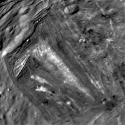

Miranda, seen by Voyager 2
Miranda is the smallest of the round moons of Uranus.
It was discovered by Gerard Kuiper in 1948 and is named after a character from Shakespeare's play The Tempest.
It is unique from the other four mostly cratered ones, as it features vast regions of upwelled terrain (coronae), as well as extremely large scarps on it's surface like the 10-15 km deep Verona Rupes.
The only mission to date to visit Miranda was Voyager 2.
Miranda is named after a character from William Shakespeare's play The Tempest.
This follows the theme of moons of Uranus bearing names of characters from the works of Shakespeare and Alexander Pope.
However, John Herschel named the other four specifically after fairies.
Miranda was discovered on 16 February 1948 by Gerard Kuiper at the McDonald Observatory in Texas.
It was the first satellite of Uranus discovered in nearly 100 years.
Orbit and rotation
Miranda's orbit has a semi-major axis of 129,000 km, making it the closest of the five major moons to Uranus.
It is the 15th moon between Mab and Ariel.
Like the other round moons, it is tidally locked to Uranus.
Among the regular satellites, it has the greatest inclination of 4.4°, which is unusually high for a moon this close to a planet.
It has a low eccentricity of 0.0014.
Miranda has a mean diameter of 471 km, making it the smallest of the round moons of Uranus and the second smallest round moon in the Solar System behind Mimas.

Inverness Corona with Argier Rupes (upper left) and Alonso crater (top)
Miranda has the lowest density of the five round moons of Uranus.
At 1.15 g/cm^3, its composition is 60% water ice, the rest being silicate rocks and organic compounds within the core.
It is yet unexplained how the small moon got its surface, but it is suggested that Miranda was in a 3:1 orbital resonance with Umbriel at one point, which resulted in tidal heating.
Even if that is the case. Miranda is currently not tidally heated, judging by its low eccentricity today.
Another hypothesis suggests that Miranda might have been shattered into pieces by a violent impact, leaving marks from its reaggregation.
The surface of Miranda consists of water ice, but it is possible that methane, ammonia, carbon monoxide and nitrogen are also present.
Miranda's surface is the most unique of the round moons of Uranus.
Four regions of old cratered terrain have been defined - Mantua, Sicilia, Ephesus, and Dunsinane Regiones.
In between them are three unique upwellings, or coronae.
The two bigger ones are Elsinore and Arden Coronae.
The third, Inverness Corona, is where the South pole is, and has several distinct bright chevrons.
The 10-15 km high cliff of Verona Rupes
Unlike the other four, which have heavily cratered surfaces without many other features apart from several faults on Titania and Ariel, Miranda is torn apart by large scarps.
The chain of escarpments begin with the Argier Rupes on the northernmost end of Inverness Corona.
Near the terminator at the time of the Voyager 2 mission lies the most striking Verona Rupes, which is 20 km wide and 10-15 km deep.
It is unknown how long Verona Rupes is, but it most likely extends far into the northern hemisphere.
There are also many impact craters within the regiones and much fewer in the coronae.
Alonso is the largest known crater, located near the ends of Argier and Verona Rupes.
A much larger basin is located in Mantua Regio between Francisco and Trinculo craters, which migh be from an older impact.
All of the features mentioned are within the southern hemisphere.
The northern hemisphere of Miranda, which was in darkness during the Voyager 2 flyby, remains unexplored.
Voyager 2 was the only spacecraft to visit Miranda in 1986.
It made a flyby with the closest approach at 29,000 km, much closer to the surface than those of the other four moons.
This made it possible to see the features at a much greater spatial resolution.
A number of missions to Uranus have been proposed by ESA, NASA, and CNSA, with Miranda being the moon sparking the greatest interest for further investigation.
External links